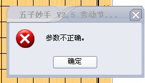

五子妙手V2.5劳动节专用版发布：增加一个重要功能
#1 五子妙手V2.5劳动节专用版发布：增加一个重要功能 作者：小丸.net 发表时间：2007-4-30 11:52:22
v2.5劳动节专用版 新增功能
1.支持截取部分图片并保存为文件

点击这里下载
下载后请解压到原来五子妙手目录下覆盖原文即可：
使用方法，在任何时候按ALT+f3,然后在棋盘上像QQ截图那样截取任何一块，即可以保存为一个JPG文件，供论坛上传
#2 Re:五子妙手V2.5劳动节专用版发布：增加一个重要功能 作者：逆刃 发表时间：2007-4-30 15:17:56
恩,这个功能不错.可以省去用截图软件了!#3 Re:五子妙手V2.5劳动节专用版发布：增加一个重要功能 作者：小丸.net 发表时间：2007-4-30 15:38:57
这个功能，在3.0中有
#4 Re:五子妙手V2.5劳动节专用版发布：增加一个重要功能 作者：yidefei 发表时间：2007-4-30 15:52:12
期待ing 3.0#5 Re:五子妙手V2.5劳动节专用版发布：增加一个重要功能 作者：yidefei 发表时间：2007-4-30 15:56:56
期待ing 3.0#6 Re:五子妙手V2.5劳动节专用版发布：增加一个重要功能 作者：逆刃 发表时间：2007-4-30 16:17:03
刚刚试了下,图片质量还不错,不亏是牛人啊!#7 Re:五子妙手V2.5劳动节专用版发布：增加一个重要功能 作者：catman 发表时间：2007-4-30 23:23:35
哦还有呀看看#8 Re:五子妙手V2.5劳动节专用版发布：增加一个重要功能 作者：极地剑客 发表时间：2007-4-30 23:57:45
哇~楼主大侠~啥时候加个倒记时功能啊#9 Re:五子妙手V2.5劳动节专用版发布：增加一个重要功能 作者：gerbo 发表时间：2007-5-1 1:26:04
 等到５.０出来我就去下载～～吼吼～！！
等到５.０出来我就去下载～～吼吼～！！
#10 Re:五子妙手V2.5劳动节专用版发布：增加一个重要功能 作者：极地剑客 发表时间：2007-5-1 6:41:50
强人~#11 Re:Re:五子妙手V2.5劳动节专用版发布：增加一个重要功能 作者：青发伊凌寺 发表时间：2007-5-5 22:06:03
你好喜剧哦.#12 Re:五子妙手V2.5劳动节专用版发布：增加一个重要功能 作者：潇洒 发表时间：2007-5-7 12:15:41

我的出问题了